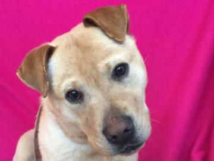

Animal Humane Society
Featured Friends - 11/14/16
Hi! My name is Dougie.

Mini Rex / Rabbit | Neutered Male | 4 years old | 5 pounds
ID #: 31253658 | Adoption Fee: $51.00
Location: Golden Valley | Mon–Fri: 12 p.m.–8 p.m. | Sat–Sun: 10 a.m.–6 p.m.
I was in a shelter that lacked the resources to continue to care for me, so I came to Animal Humane Society to find a new home.
Additional Information:
I am a Shy Snuggler! Shy Snugglers are relaxed, gentle and a little bit timid. They adapt fairly quickly to new environments, people and changes in routine, but can be overwhelmed by too much noise or activity. They are affectionate and enjoy human interaction, but also need time alone. They are rarely mischievous and often live harmoniously with other pets. They prefer a calm, quiet home and are a great choice for first-time adopters and homes with gentle children of all ages. They are not the best candidate for agility class or the role of therapy animal, but may enjoy these roles over time.
Hi! My name is Giraffe.
Chow Chow/Chinese Shar-Pei | Neutered Male | 1.5 years old | 57 pounds
ID#: 31183166 | Adoption Fee: $247.00
Location: Woodbury | Mon–Fri: 12 p.m.–8 p.m. | Sat–Sun: 10 a.m.–6 p.m.
I was found as a stray, so I came to Animal Humane Society to find a new home.
Additional Information:
People describe me as playful. Playful dogs enjoy playing with toys and often enjoy other busy interactions. We may like a good game of fetch or just quietly chewing on a stuffed animal. No matter which toys we choose, we prefer to include our families in the fun.
People also describe me as energetic. Energetic dogs love to be busy, both physically and mentally. We often enjoy seeing and doing new things with our families and are often best matched with active people. Energetic dogs do best in homes that can provide them adequate exercise and mental stimulation, such as running, hiking, or playing Frisbee.
Lived with children: No | Lived with animals: No
Hi! My name is Millie.

Domestic Shorthair | Spayed Female | 6 years old | 12 pounds
ID #: 31217439 | Adoption Fee: $61.00
Location: Golden Valley | Mon–Fri: 12 p.m.–8 p.m. | Sat–Sun: 10 a.m.–6 p.m.
Someone in my family was allergic to me, so I came to Animal Humane Society to find a new home.
Additional Information:
People describe me as shy. Shy cats are loving companions that take longer to acclimate to a new environment. A quieter, low-activity home would allow me the opportunity to get used to new things at my own pace.
People also describe me as independent. Independent cats love to explore their surroundings and need plenty of toys and activity to keep them busy and engaged. We tend not to be demanding for cuddles & kisses and mostly enjoy hanging out with you and being a part of your daily activities. Families with older children are especially suitable for cats like me.
Date Surrendered: 2016-04-06 | Time in former home: 6 Years
Declawed: No
Lived with children: No | Lived with animals: Yes (Dogs, Cats)